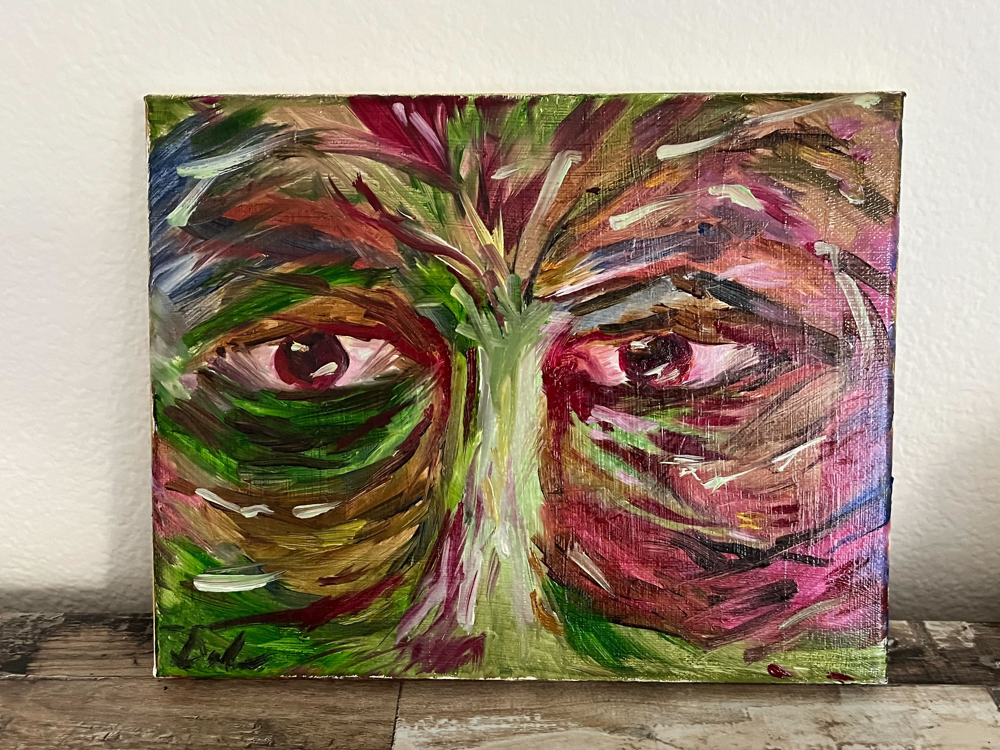

I am a beginner just starting to paint. I paint with oil on canvas.
I have a long way to go, but I appreciate the journey.
Eyes of treant—10" × 8"
Liquid light—8" × 10"
Flowers in vase—8" × 10"
I am very much still in the exploratory phase, so the work shown here may be sanded down and painted over at a later time. It all depends on what I am working on, and how much space I have at home.
Please use the contact page to reach out.